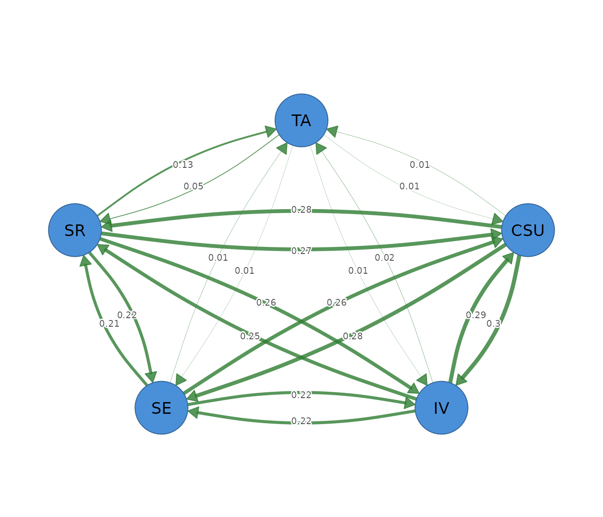

Relative-importance networks
Source:vignettes/relative-importance-networks.Rmd
relative-importance-networks.RmdWhat a relative-importance network is
A relative-importance network describes how much each variable contributes to explaining every other variable. It fits a multiple regression for each node, uses the remaining nodes as predictors, and divides the model’s among those predictors. The resulting contribution shares become directed edges.
Direction has a practical meaning. An edge from motivation to achievement is the share of achievement’s explained variance attributed to motivation after the other predictors have been considered. The reverse edge is the share of motivation’s explained variance attributed to achievement. These values can differ because each direction uses a different outcome model.
The decomposition handles correlated predictors by averaging each predictor’s increase in across all possible entry orders. A predictor therefore receives a share of both its unique contribution and the explanatory information it shares with other predictors. Incoming edges sum to the outcome node’s full , creating an interpretable variance budget.
Relative-importance edges describe predictive attribution within linear regressions. They do not identify causal effects, temporal direction, or the change expected from an intervention.
The data
The worked example uses SRL_GPT, which contains 300
observations on cognitive strategy use (CSU), intrinsic
value (IV), self-efficacy (SE),
self-regulation (SR), and test anxiety (TA).
Each variable is a continuous composite score on a 1 to 7 scale.
head(SRL_GPT)
#> CSU IV SE SR TA
#> 1 5.307692 5.666667 5.777778 5.333333 4.00
#> 2 5.846154 6.444444 6.000000 5.777778 4.00
#> 3 6.615385 6.666667 6.222222 6.333333 3.25
#> 4 5.692308 6.555556 6.333333 5.555556 4.50
#> 5 4.384615 5.555556 4.888889 4.777778 4.00
#> 6 4.846154 5.444444 5.666667 5.111111 3.50The data are complete, so every correlation uses all 300 observations. The workflow assumes that linear regression is suitable for the variables. A full analysis should inspect missingness, distributions, unusual observations, linearity, and measurement quality.
Fitting the network with psychnet()
psychnet() estimates a relative-importance network when
method = "relimp". It returns a directed
psychnet object containing the LMG importance shares and
the full-model
for every node.
importance_net <- psychnet(data = SRL_GPT, method = "relimp")
importance_net
#> <psychnet> relimp network
#> nodes: 5 edges: 20 (directed)
#> optimality (KKT residual): 1.11e-16The network contains 5 nodes and 20 directed edges, one for every ordered pair of distinct nodes. Relative importance allocates a contribution to every predictor, so the raw network is complete unless a contribution is exactly zero.
Inspecting directed contributions with summary()
summary() prints the fitted network and returns an edge
table with from, to, and weight.
The from node is the predictor, the to node is
the outcome, and weight is the predictor’s share of the
outcome’s
.
summary(importance_net)
#> <psychnet> relimp network
#> nodes: 5 edges: 20 (directed)
#> optimality (KKT residual): 1.11e-16
#> edge weight: range [0.006, 0.299], mean 0.165The weights range from 0.006 to 0.299. The largest edge runs from
CSU to IV (0.299), meaning that cognitive
strategy use receives 0.299 of the variance explained in intrinsic
value. The reverse IV to CSU edge is 0.289.
The two directions are similar here, but they are separate regression
contributions.
Self-regulation contributes 0.128 to the explained variance of test
anxiety. This is the largest incoming contribution to TA.
The other incoming shares are small: 0.014 from CSU, 0.015
from IV, and 0.012 from SE. These four shares
sum to the full
for test anxiety.
Edges pointing from test anxiety to the learning constructs are also small, ranging from 0.006 to 0.052. Test anxiety therefore contributes little to explaining those outcomes in the fitted regressions.
Checking the decomposition with certificate()
certificate() evaluates the efficiency identity of the
relative-importance decomposition. It returns method,
certificate, kind, and certified.
The residual is the largest difference between a node’s incoming edge
sum and its full-model
.
certificate(importance_net)
#> method certificate kind certified
#> 1 relimp 1.110223e-16 structural TRUEThe residual is
and certified is TRUE. This value is at the
order of machine precision. It indicates that the incoming importance
shares reconstruct every node’s
to numerical precision. The certificate checks the arithmetic identity,
not the adequacy or stability of the regression models.
Reading incoming explanation with net_predict()
net_predict() reports each node’s full-model
.
The returned table contains node, type,
metric, predictability, and
accuracy. Gaussian nodes use metric = "R2",
and classification accuracy does not apply.
net_predict(importance_net)
#> node type metric predictability accuracy
#> 1 CSU gaussian R2 0.8334882 NA
#> 2 IV gaussian R2 0.7814012 NA
#> 3 SE gaussian R2 0.7262171 NA
#> 4 SR gaussian R2 0.7956941 NA
#> 5 TA gaussian R2 0.1693997 NACognitive strategy use has , self-regulation has 0.796, intrinsic value has 0.781, and self-efficacy has 0.726. The other four constructs account for a large proportion of each learning construct’s variance.
Test anxiety has . Its four incoming importance shares therefore form a much smaller variance budget. Most variation in test anxiety remains outside this five-variable linear model.
Reading outgoing contribution with
net_centralities()
net_centralities() sums outgoing edges for a directed
relative-importance network. Its default table contains
node, strength, and
expected_influence. All LMG shares are non-negative, so
strength and expected influence are equal.
net_centralities(importance_net)
#> node strength expected_influence
#> 1 CSU 0.8716118 0.8716118
#> 2 IV 0.7759844 0.7759844
#> 3 SE 0.7047411 0.7047411
#> 4 SR 0.8810358 0.8810358
#> 5 TA 0.0728272 0.0728272Self-regulation has the largest outgoing total (0.881), followed by cognitive strategy use (0.872). Across the four regressions where it is a predictor, self-regulation receives the greatest total attributed contribution. Test anxiety has the smallest outgoing total (0.073).
The two node tables answer different questions.
net_predict() summarizes incoming explanation, which is how
well a node is explained by the others. net_centralities()
summarizes outgoing contribution, which is how much a node contributes
to explaining the other outcomes.
Visualizing direction with cograph::splot()
cograph::splot() draws the fitted network when the
optional cograph package is available. The argument
directed = TRUE displays arrowheads, and
edge_labels = TRUE prints the importance shares on the
edges.
cograph::splot(importance_net, directed = TRUE, edge_labels = TRUE)
The plot is dense because all ordered pairs have a contribution. Edge direction and width aid orientation, but the edge table is the primary result for exact interpretation. Node distances from the layout have no statistical scale.
Sensitivity to rank correlations
psychnet() accepts cor_method = "spearman"
for a rank-based sensitivity analysis. This analysis evaluates whether
the attribution pattern persists when the regression decomposition is
based on monotonic rank associations.
importance_spearman <- psychnet(data = SRL_GPT, method = "relimp", cor_method = "spearman")
importance_spearman
#> <psychnet> relimp network
#> nodes: 5 edges: 20 (directed)
#> optimality (KKT residual): 1.11e-16
summary(importance_spearman)
#> <psychnet> relimp network
#> nodes: 5 edges: 20 (directed)
#> optimality (KKT residual): 1.11e-16
#> edge weight: range [0.004, 0.299], mean 0.160The largest rank-based edge remains CSU to
IV at 0.299. The learning constructs retain substantial
contributions to one another. The contribution from self-regulation to
test anxiety decreases from 0.128 to 0.086, and the other test-anxiety
contributions remain small.
net_predict(importance_spearman)
#> node type metric predictability accuracy
#> 1 CSU gaussian R2 0.8276988 NA
#> 2 IV gaussian R2 0.7714652 NA
#> 3 SE gaussian R2 0.7123679 NA
#> 4 SR gaussian R2 0.7723157 NA
#> 5 TA gaussian R2 0.1156386 NAThe rank-based for test anxiety is 0.116, compared with 0.169 in the Pearson analysis. The four learning constructs retain values from 0.712 to 0.828. The main learning-construct pattern persists, while the explanation of test anxiety is sensitive to the correlation estimator.
Reporting the analysis
A report should state the variables, sample size, correlation estimator, missing-data procedure, whether raw or normalized shares were used, and the LMG decomposition. Each edge must identify its predictor and outcome direction. Incoming and outgoing contribution should be reported as distinct node summaries.
The present analysis used raw LMG shares based on Pearson correlations from 300 complete observations. The network contained 20 directed edges. The largest edge ran from cognitive strategy use to intrinsic value (0.299). The incoming shares reconstructed every node’s with a maximum residual of . A Spearman sensitivity analysis preserved the main learning-construct pattern but reduced the variance explained in test anxiety.
How relative importance is computed
For each outcome, the method considers every subset of the remaining predictors. It measures how much the model’s increases when a predictor is added to each subset and averages those increases with weights that represent all possible predictor orders. This average is the predictor’s LMG share.
The shares are non-negative and sum to the full-model
.
Raw shares retain that variance scale. Setting
normalized = TRUE rescales the incoming shares of each
outcome to sum to 1, which expresses relative proportions within the
outcome’s explained variance. Normalization changes the reporting scale
and does not change the underlying full-model
.
The method evaluates
predictor subsets for each outcome, so computation grows rapidly with
the number of nodes. relimp_network() uses a default limit
of 21 nodes.
Mathematical foundations
For outcome and predictor set , the LMG share of predictor is
For a subset , its regression is computed from correlation matrix as
The efficiency identity is
The directed weight matrix has
.
Column sums are incoming
values reported by net_predict(). Row sums are outgoing
contributions reported by net_centralities().
certificate() returns the maximum absolute deviation from
the efficiency identity across nodes.